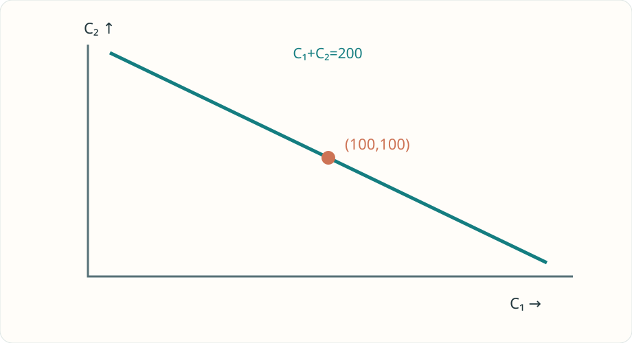
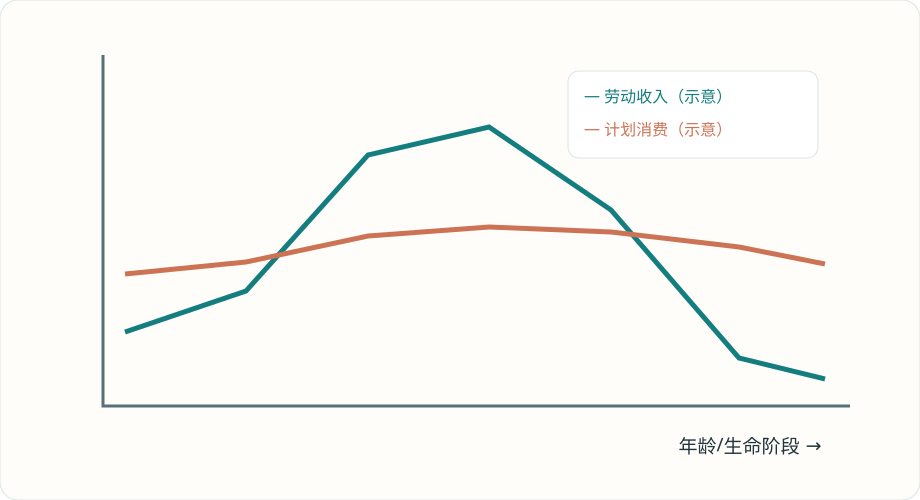

消费理论：永久收入、生命周期与流动性约束
一个家庭本月奖金 20 元与未来每个月都多赚 20 元，会不会带来同样消费？用跨期预算与流动性限制理解消费平滑。
为什么短期工资和支出不总是同步变化？
在简单凯恩斯消费函数中，消费 C 随当前可支配收入 Y−T 变化，c 表示边际消费倾向；这个短期近似有用，却无法解释所有消费决定。家庭既会从过去积累的财富中支出，也会考虑未来收入、养老与孩子教育，还可能因为无法借钱而被迫「挣多少花多少」。永久收入/生命周期理论强调跨期资源配置，流动性约束说明为什么理想平滑不能总实现。
两期预算约束把今天与未来连在一起
设家庭只有今天和明天两期，初始资产 W₀=0，期间实际利率 r。在不存在借贷约束、收入确定、没有遗赠与税费的模型下，第一期消费加上第二期消费的现值等于两期可支配资源的现值。这是预算恒等式，尚未告诉我们最优消费组合。

要决定哪个点更理想，必须加上对平滑的偏好。例如两期同权重的对数效用且 r=0，最大化 ln(C₁)+ln(C₂) 给出 C₁=C₂。在 Y₁=80、Y₂=120 时，若允许借贷则各消费100：第一期借入20，第二期用收入中的20还款。
Euler 条件是偏好与约束的结果，不是天条
若对两期效用给予折现权重 β 且考虑实际回报 r，通常写作 u′(C₁)=β(1+r)u′(C₂)；不确定性时还应出现条件期望。等式的成立需要内点解、可用金融资产和相应优化假设。β(1+r) 不一定等于1，因此最优消费不必恰好两期相等。
金融约束会打断理想消费平滑
继续用 Y₁=80、Y₂=120、r=0 的例子。无借贷限制时每期消费100，需要第一期借20；若最多只能借10，则第一期消费不能超过90，第二期必须至少消费110；如果完全不能借款，第一期最高消费80，第二期为120。家庭即使清楚未来会加薪，也未必能把未来收入提前用于今天。
改变两期收入和允许借款额度
假定 r=0、两期同权重对数效用、无存款下限以外的其他摩擦。先算理想平滑，再按第一期最大借款额度约束。
永久冲击与暂时冲击的可区分预言
仍在 r=0 的两期模型，原收入为 (80,120)，总资源200。若第一期偶然多得20，但第二期不变，总资源220，则理想每期消费由100增至110，即每期各增10；若两期收入都永久增加20，总资源240，则每期由100增至120。因而相同当期额外收入，对预期持续性不同的冲击会有不同消费响应。
这只是均匀分摊的两期算术，不是把宏观经济中所有家庭的 MPC 断言为 0.5。美联储对 2026 年家庭样本的研究讨论了不同收入、财富、流动性与金融知识背景下 MPC 的显著异质性。原始研究可用于了解方法与局限。

减税会不会只变成新增储蓄？
如果家庭完全预见未来需要用更高税收偿还当期政府债务，资本市场完善、税收不扭曲且跨代安排等其他条件成立，政府通过债务融资的当期减税可能被更高的私人储蓄抵消，这构成李嘉图等价命题的条件性直觉。但存在流动性约束、有限寿命、税收扭曲、政策不确定性或非完全理性时，减税可能影响消费。
来源与进一步阅读
以下机构或原始研究帮助核对概念与经验边界。本文数值图示和实验是专为教学设计的构造例子，不是历史实测数据。
- NBER — 永久收入假说的经验检验 · Hall type implications
- 美联储 — 家庭边际消费倾向的异质性（2026） · liquidity/wealth heterogeneity
- 美联储 — 收入冲击如何影响消费（2024） · permanent/transitory shocks
- NBER — 消费与流动性约束 · credit frictions